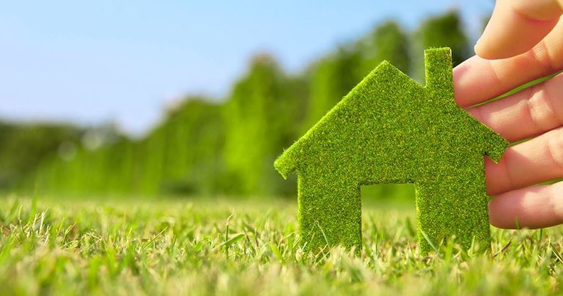
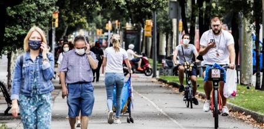

El cambio climático
¿Qué es el cambio climático?
Existe un gran desconocimiento de lo que es el cambio climático en realidad, ya sea por demasía de información, inexactitud en las fuentes o por desinformación interesada, lo que da principio a una nómina de falsos mitos sobre el cambio climático. En este articulo abordaremos desde un punto de vista imparcial y científico qué es el cambio climático, cuáles son sus causas, sus consecuencias y cómo se puede combatir. En definitiva, cómo nos afecta el cambio climático.
Como primer punto es necesario explicar dos conceptos que, si bien están estrechamente relacionados, con frecuencia se toman de forma errónea como sinónimos: el cambio climático y el calentamiento global. Existe una interesante diferencia, y es que el calentamiento global es la causa del cambio climático, es decir, el aumento de la temperatura del globo provocado por las emisiones a la atmósfera de gases de efecto invernadero derivadas de la actividad del ser humano, están provocando variaciones en el clima que de forma natural no se producirían.

Causas y consecuencias del cambio climático
La principal causa del cambio climático es el calentamiento global y tiene múltiples consecuencias negativas en los sistemas físicos, biológicos y humanos, entre otros efectos.
Principales causas del cambio climático
Gases de efecto invernadero
Un gas de efecto invernadero es un gas que absorbe y emite radiación dentro del rango infrarrojo. Este proceso es la fundamental causa del efecto invernadero. Los principales GEI en la atmósfera terrestre son el vapor de agua, el dióxido de carbono, el metano, el óxido nitroso y el ozono.
Aumento poblacional
El número de habitantes del planeta crece exponencialmente. Hoy somos más de 7.700 millones de personas y continuaremos creciendo hasta 2050 al menos 2.000 millones más. Una población cada vez más numerosa necesita cada vez más recursos, lo que acelera el aumento de la emisión de gases de efecto invernadero en todos los procesos de producción.
Principales consecuencias del cambio climático
Cambios en el ecosistema
El cambio climático tiene repercusiones en la biodiversidad y los ecosistemas y a menudo exacerba otras presiones, como la contami- nación, la sobreexplotación, las especies invasoras, y la fragmentación, degradación y pérdida de hábitats.
Derretimiento de los polos
El deshielo de los polos en el Ártico y en la Antártida ya es un hecho demostrado por la comunidad científica internacional. El cambio climático, causado principalmente por las emisiones de gases de efecto invernadero, ha afectado a muchos ecosistemas. El deshielo de los polos se acelera.
¿Qué podemos hacer par revertir el daño?
1. Ahorra energía en casa

Gran parte de nuestra electricidad y calefacción funciona con carbón, petróleo y gas. Utiliza menos energía reduciendo el uso de la calefacción y el aire acondicionado, cambiando a bombillas LED y electrodomésticos de bajo consumo, lavando la ropa con agua fría o tendiendo la ropa mojada en lugar de utilizar la secadora. Mejorar la eficiencia energética de tu casa a través de, por ejemplo, un mejor aislamiento o reemplazar el horno de petróleo o gas por una bomba de calor eléctrica, puede reducir la huella de carbono hasta en 900 kilogramos de CO2(equivalente) al año.
2. Desplázate a pie, en bicicleta o en transporte público

Las carreteras del mundo están saturadas de vehículos, la mayoría de los cuales usan diésel o gasolina. Caminar o ir en bicicleta, en lugar de conducir, reduce las emisiones de gases de efecto invernadero y supone un beneficio para la salud y la forma física. Para distancias más largas, considera viajar en tren o autobús. Y comparte el coche siempre que sea posible. Vivir sin coche puede reducir la huella de carbono hasta en 2 toneladas de CO2 (equivalente) al año en comparación con un estilo de vida en el que se utilice el coche.
3. Come más verduras
Comer más verduras, frutas, cereales integrales, legumbres, frutos secos y semillas, y menos carne y productos lácteos, puede reducir considerablemente el tu impacto medioambiental. La producción de alimentos de origen vegetal suele generar menos emisiones de gases de efecto invernadero y requiere menos energía, tierra y agua. Cambiar de una dieta mixta a una vegetariana puede reducir tu huella de carbono en hasta 500 kilogramos de CO2 (equivalente) al año (o en hasta 900 kilogramos si es una dieta vegana).